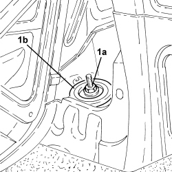
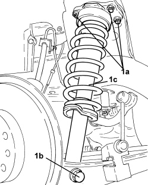
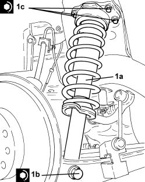
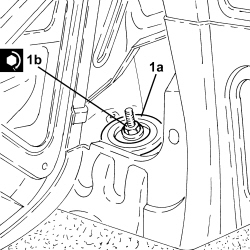

4420A12 REAR SUSPENSION DAMPER (ONE), LH OR RH - FOR MCPHERSON STRUT SYSTEM - INCLUDES DISMENTLING/REBUILDING OF ASSEMBLY AT BENCH - R.R.
- Path
- Procedures > 44 SUSPENSION AND WHEELS > 4420 REAR SUSPENSION > 4420A REAR DAMPERS AND SPRINGS > 4420A12 REAR SUSPENSION DAMPER (ONE), LH OR RH - FOR MCPHERSON STRUT SYSTEM - INCLUDES DISMENTLING/REBUILDING OF ASSEMBLY AT BENCH - R.R.
- Kind
- repair procedure (removal / refitting; the operation number is the code)
- Applies to
- all engines; all production periods
- Interactive page
- https://sloeber94.github.io/elrnDB-aBrrSpdr/en/#/946002209
Applies to: all engines; all production periods
 Removing
Removing
 Refitting
Refitting- Position the vehicle on a lift.
Op. 4450B08 RIGHT REAR WHEEL - R.R
1. Working via the luggage compartment, undo the nut (1a) and remove the rear shock absorber upper mounting (1b).

Applies to: all engines; all production periods
1. Unscrew the bolts (1a), bolt (1b) and remove the rear suspension front shock absorber assembly (1c).

Applies to: all engines; all production periods
1. At the bench, position the shock absorber assembly (1a) on the tool (1b) for dismantling.
- Compress the shock absorber and the spring using the tool.
2. Undo the nut (2a) using the tool (2b) for counter-torque.
- Release the shock absorber and spring compression using the tool.
3. Dismantle the various components from the shock absorber stem.

Applies to: all engines; all production periods
Refitting
Removing1. Assemble the various components on the shock absorber stem.
2. Compress the shock absorber and the spring using the tool.
3. Tighten a new nut (3a) to the specified torque using the tool (3b) for counter-torque.
- Remove the shock absorber assembly from the tool.

Applies to: all engines; all production periods
1. Place the rear suspension shock absorber assembly (1a) back in its housing and secure it tightening the bolt (1b) and the bolts (1c) to the recommended torque.

Applies to: all engines; all production periods
1. Working via the luggage compartment, place the rear suspension upper mounting (1a) back in its housing and secure it tightening the nut (1b) to the recommended torque.

Applies to: all engines; all production periods
Op. 4450B08 RIGHT REAR WHEEL - R.R
- Remove the vehicle from the lift.